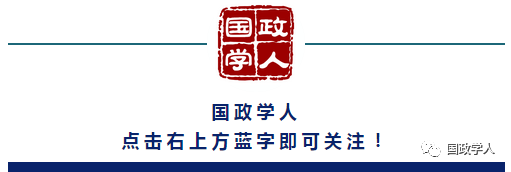
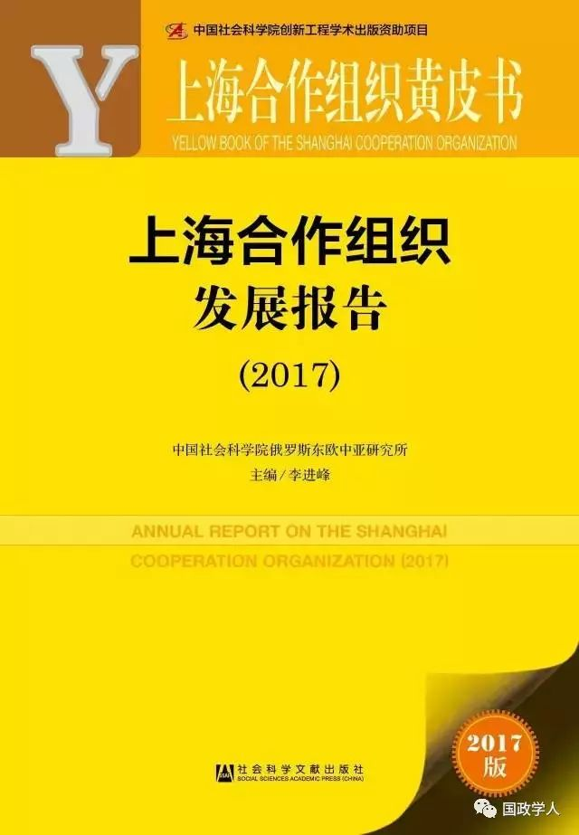

收录于合集
以下文章来源于皮书说 ，作者皮书说
皮书说 .
透过数据发现不一样的世界

2017年6月6日，由中国社会科学院俄罗斯东欧中亚研究所和社会科学文献出版社共同举办的《上海合作组织黄皮书：上海合作组织发展报告（2017）》发布会在京举行。

黄皮书指出， 中亚地区宗教极端和恐怖组织政治化、国际化、网络化的基本特征的形成，离不开阿富汗塔利班、基地组织、伊斯兰国等外部势力的大力资助和扶持。 这些外部势力，平时予以思想意识形态的输出、巨额资金和武器装备的支持、恐怖技能的军事培训，困难时期提供庇护场所予以隐藏，在其力量强大开始进攻或者向母国回流时则提供后方基地和人员。 在这些域外国际恐怖组织的共同作用下，中亚地区形成了三种类型的宗教极端和恐怖组织：
目前 通过诸多综合措施和利用各种地区合作机制，中亚地区保持了全局 整体的稳定 ，地区宗教极端和恐怖组织行动处于监督和可控之中，不会造成大的动荡。 未来看 ，苏联解体后的伊斯兰复兴能量正在逐步消耗渐尽，经济全球化和政治民主化带来全球治理和国际秩序的新形势，欧亚大陆地缘政治正在面临深刻变革。中亚地区宗教极端和恐怖组织，在美国中亚政策不明朗、阿富汗局势仍然动荡、伊斯兰国在中东的崩溃旦夕之间等外部一系列因素变化十分不确定的前提下，可能会对中亚地区安全形势造成影响。
未来， 中亚地区的安全形势决定于三大因素影响 ：一是执政当局防范打击能力；二是地区经济形势的发展；三是反恐共识认识层次（国际合作的认同建构）。只要防范打击严密，措施得当，就难以掀起巨大风波，如果地区和国家内部仍然存在诸多漏洞，则恐怖活动会趁机再一次泛滥。这些因素，均会对我丝绸之路经济带战略构想产生重大影响，应未雨绸缪，提早应对。
（一）受宗教极端思想宣传蛊惑影响中亚国家境内土生土长的组织
这类 组织规模相对较小，人员数量相对较少 ，有时经常刚刚露头，就遭到严厉打击， 难以继续发展壮大，不会产生较大威胁 。
“中亚圣战者联盟” （Жамаат моджахедов ЦентральнойАзии），2002年根据 基地和塔利班向乌哈两国渗透的命令而成立 ， 目标 是在哈乌境内实施恐怖活动，推翻世俗政权，打击伊斯兰教的敌人，如美国、以色列及其盟友。创建人乌兹别克人别克米尔扎耶夫（А. Бекмирзаев）和哈萨克人比穆尔扎耶夫（Ж. Биймурзаев），系原“乌伊运”成员，在阿富汗受过宗教培训和军事训练，参与了巴特肯事件，熟练掌握基地组织的爆炸和破坏活动手段。两年内该组织招募了50名乌兹别克人和20名哈萨克人，分散在独联体四个国家内活动，个别成员曾专程赴阿富汗基地组织训练营参加训练，形成了制爆专家、招募专家和制造假证专家等分工明确的组织体系。2004年3月底4月初和7月30日，在乌兹别克斯坦境内实施了系列恐怖活动。2004年底预谋对哈领导人实施自杀式袭击，后被哈警方发现并捣毁，头目及14名成员遭逮捕和宣判。
“哈里发战士” （Джундь-аль Халифат），系恐怖组织，2011年夏在哈萨克斯坦成立， 目的 是在哈萨克斯坦境内发动圣战，参与国际恐怖主义活动。主要成员全部藏匿在阿富汗与巴基斯坦交界地区。2011年10月底在阿特劳制造了两起爆炸事件，12月在阿拉木图州警方的专项清剿行动中被消灭，5名成员被击毙。
此外，还有塔吉克斯坦境内的 “安拉战友会” （Джамоати Ансорулло）和吉尔吉斯斯坦境内的 “公正统治军” ，均将斗争的矛头直指现政权，制造实施了数起恐怖袭击事件。2014年8月，“安拉战友会”的两名领导成员在阿富汗与塔吉克斯坦交界的巴达赫尚地区被击毙。
（二）受到庇护和支持的活动区域遍布全区及跨区的组织
组织规模较大，实力比较强，行动较为灵活， 可顺利在各国之间潜入潜出，以攫取国家政权为目标，属于 清剿不尽，打不赢就跑的类型 ，与阿富汗、巴基斯坦等地的国际恐怖组织有密切关系。
“乌兹别克斯坦伊斯兰运动” （Исламское движение Узбекистана），简称乌伊运，是最主要的代表，1996年由尤尔达舍夫纠集了一批极端分子成立。据2010年乌兹别克斯坦内务部公布的一份恐怖分子名单中，在被通缉的1444名恐怖分子和极端分子中，“乌伊运”成员就有633名。作为中亚地区最主要的政治极端和恐怖组织及重要安全威胁，曾掀起中亚暴力恐怖活动的高峰。911事件后主要在阿富汗北部和东部地区活动，在巴阿边境地区进行积极的招募和训练。2002年组织发生分裂，产生了相互竞争、意见分歧的几个分支机构。2009年科兹继任后，再未成功在中亚地区制造过大规模行动。2014年10月向伊斯兰国效忠后，领导指挥层头目极缺，组织活动主要取决于伊斯兰国的资金支持，但却遭到塔利班多次报复式攻击。2015年7月初，头目科里·西克玛杜洛赫（Кори Хикматуллох，主要负责乌伊运在阿北部地区的军事行动）在阿富汗北部地区巴格兰省被阿政府军击毙。据称该组织已基本被瓦解。
“突厥斯坦伊斯兰党” （Исламская партия Туркестан），2004至2005年成立于巴基斯坦瓦济里斯坦部落区，由“东突厥斯坦伊斯兰运动”改组而来，约有成员200-300名，是中亚地区最重要的宗教极端和恐怖组织之一。2005年加入基地组织，主张开展全球圣战，试图将在新疆的圣战纳入全球圣战的组成部分。极力向哈萨克斯坦渗透，2006年在哈境内发现其分支活动。伊斯兰国兴起后离开阿富汗和巴基斯坦赴叙利亚参战，在叙境内约有成员几百名，与极端组织“支持战线”关系密切。
（三）域外创立极力向中亚国家渗透地区影响快速增强的组织
因为中亚国家只是其输出渗透的一个部分，甚至并不是最主要的部分，而且经常强调采取非暴力手段，往往具有 较大欺骗性 ， 能长期生存，发展壮大 。比较有代表性的有：
“伊斯兰解放党” （Хизб ут-Тахрир аль- Ислами），简称“伊解党”，典型的跨国宗教极端组织，1952年创建于巴勒斯坦，主要在阿拉伯地区活动，有极端政治主张，否定民主价值观念，预谋破坏世俗和法制生活。内部有严密的呈金字塔型的组织体系，建立有基层支部，组织成员之间不能越级联系，但应缴纳类似“党费”作为活动资金。20世纪70年代末进入中亚，苏联解体后趋于活跃，20世纪90年代中期在费尔干纳地区、乌安集延、塔什干等地建立支部，现已将势力扩展到吉全境甚至哈萨克斯坦。在中亚地区信徒众多，据称已达十多万人。由于其速扩展引起中亚国家警惕遭到取缔而转入地下活动。911事件后一度沉寂，现在又开始活动，主要是通过大量散布传单和宣传手册来传播极端思想，甚至向居民邮箱投送极端思想宣传品，中亚国家政府强力部门对其限制和监控比较严密。
“达瓦宣教团” （Таблиги Джамаат），是一个伊斯兰教传教者组织，1927年由神职人员伊利亚斯（1885– 1944）在印度梅瓦特创立。传教时在亚洲国家10～12个人、其他地区国家3-5个人组成一个传教小组，聚集在清真寺，进行“门对门”传教。小组内有严格的纪律规定，绝对忠诚于小组领导。在南亚传教时会连续4-5个月在清真寺内栖身，在西欧和美国一般会留宿于完全由沙特瓦哈比派资助修建的清真寺或者伊斯兰中心。思想主张认为任何形式的进步都不符合伊斯兰教要求，要把妇女排除出社会生活，以狂热的态度弘扬伊斯兰教，新招募人员会被派往阿富汗和巴基斯坦的训练营接受训练。在美国一些加入或打算加入圣战小组的美国公民，均与该组织保持了联系，从而使该组织被认为是“伊斯兰极端主义与世界范围内极端和恐怖行动执行者主要招募者之间的‘传送力量’”，但美拒绝将其列入恐怖组织名单。
吉最高检察院 认为，该组织打着传教的旗号，直接或间接为恐怖组织招募成员，2009年2月将其列入极端和恐怖组织名单。 俄罗斯 2009年宣布该组织非法，理由是其破坏国家领土完整，教唆俄公民从事带有宗教色彩的刑事犯罪活动，并支持国际恐怖主义组织。2016年12月，俄罗斯警方在莫斯科抓获7名组织成员，其中吉尔吉斯人6人，俄罗斯人1人（为该组织头目），当时他们正在对新成员进行意识形态洗脑，研读在俄禁止传阅的宗教极端书籍和商讨要在俄罗斯建立伊斯兰哈里发国家。
“赎罪与迁徙组织” （Ат-такфир уа-ль- хиджра），系宗教极端组织，1960年在埃及成立，思想主张为宣传开展圣战，反对异教徒，与基地组织、伊斯兰国等国际恐怖主义组织的意识形态基础相近，赞同叙利亚和伊拉克恐怖分子的行动，整体上反对世俗国家体制和宪法法律。2014年被哈宣布严禁在境内活动。2016年12月，受境外指挥，该组织预谋2016年12月21日在阿拉木图州、阿克托别州、阿特劳州和阿拉木图市等地同时实施系列恐怖破坏活动，但被哈警方铲除，并在捣毁组织地下窝点行动中逮捕该组织哈萨克分支16名成员（也有说33名）。
未来，塔利班与阿政府当局、伊斯兰国实力对比关系，会成为影响中亚地区宗教极端和恐怖组织动向的主要因素。 2016年阿政府军曾对包括塔利班的反政府武装进行多次清剿，10月，与主要反政府武装阿伊斯兰党签署了和平协议，但阿和平进程仍遥遥无期。塔利班和伊斯兰国两股势力，均对中亚地区宗教极端和恐怖组织有重要影响，当前两股势力在阿富汗的关系并不明朗。2015年这两股势力进行宣战，并在阿富汗境内进行直接交火，势均力敌。2016年双方又达成“共存互容”口头协定，导致双方关系显得扑朔迷离。当前，伊斯兰国在中东陷于崩溃前夕，其未来发展动向极为模糊。该组织否打算向阿富汗转移，转移后能否处理好与塔利班的关系在阿富汗找到容身之地，二者究竟会形成战术同盟还是不妥协的竞争者关系，均难以预料。

来源：皮书说
筛选：晞哲
编辑：沉安
您可能还会喜欢：
期刊分享 | 国际关系相关专业所有核心期刊免费获取（最新pdf版）